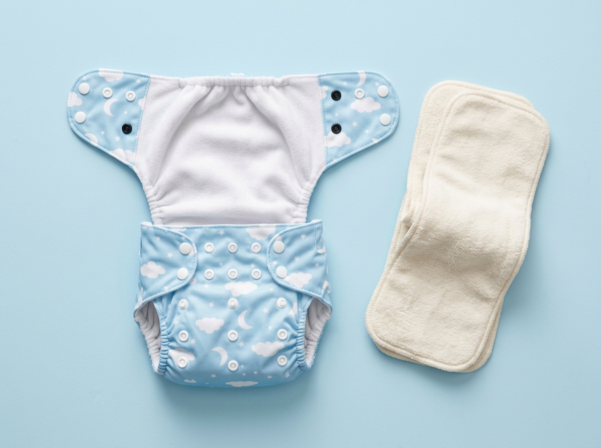
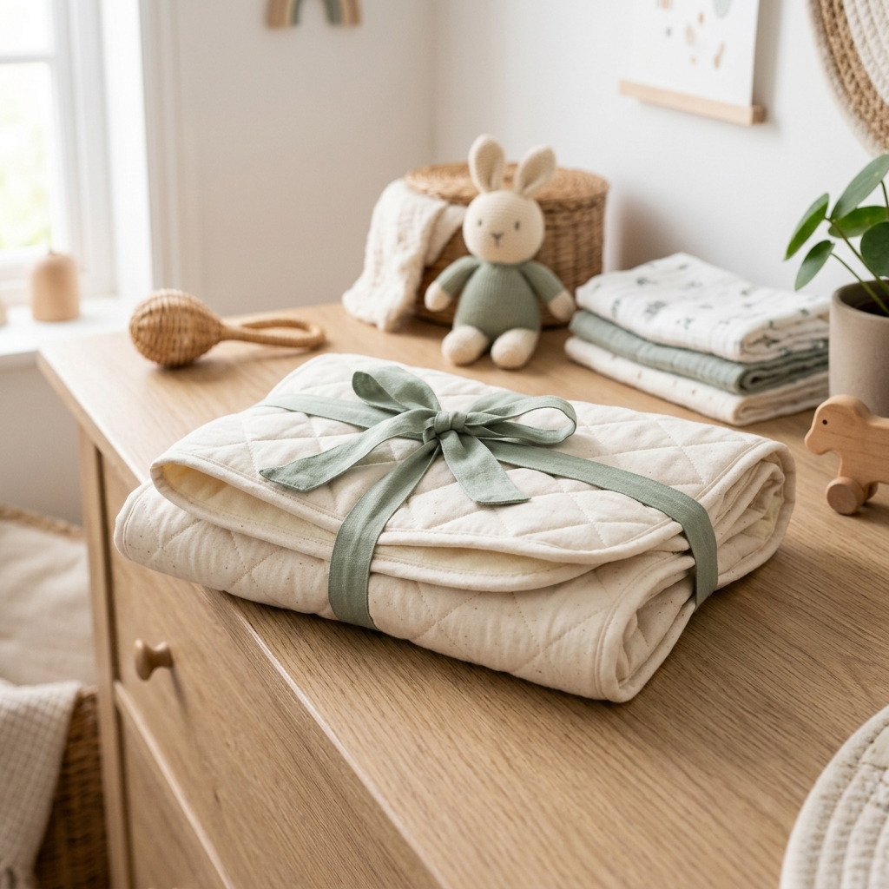

Your Practical Roadmap to
Reusable Baby Care
From your newborn's first cloth change to effortless wash rhythms, insert layering, and daycare prep—everything you need to build confidence with zero guesswork.

Anatomy of a Modern Cloth Diaper
Understanding how the three core layers work together makes diapering intuitive and leak-free from day one.
Waterproof Breathable TPU Shell
The patterned outer layer is thermally bonded with thermoplastic polyurethane. It stops liquids from escaping onto nursery bedding or baby clothes while letting air vapor circulate freely.
Stay-Dry Microfleece Inner Lining
Urine passes immediately through this velvety, hypoallergenic fleece directly into the insert below. The fabric remains dry to the touch against baby's skin, stopping diaper rash.
High-Density Bamboo & Hemp Insert
The "engine" of the diaper. Stuffed into the pocket, these unbleached organic plant layers hold up to 250ml of liquid without leaking when baby sits, rolls, or naps.
Double Gussets & Adjustable Rise Snaps
Twin elastic barriers around thighs seal against blowouts. Three vertical snap rows adjust the rise to fit your baby seamlessly from 8 lbs up to 35 lbs.
Starting with Reusable Baby Products Beyond Diapers
Reusable parenting is easiest and most rewarding when you incorporate practical washable essentials across your nursery, mealtime, and diaper bag. Here is how to wash, store, carry, and maintain your essentials:
 Diapering & Hands
1 Wipe = 4 Paper
Diapering & Hands
1 Wipe = 4 Paper
Reusable Bamboo Wipes
 Travel & Nursery
100% Odor-Lock
Travel & Nursery
100% Odor-Lock
Waterproof Wet Bags

Changing Zone Plush & CleanWashable Changing Pads
How Many Reusable Essentials Do You Need?
Here is a realistic checklist of diapers, wipes, bibs, and accessories needed for a stress-free 2-to-3-day wash rhythm:
Newborn Care Stash
- 24 – 30 Cloth Diapers (Pockets / AIO)
- 36 Reusable Bamboo Wipes
- 8 Washable Bamboo Nursing Pads
- 4 Waffle Burp Cloths & 6 Washcloths
- 2 Small Travel Wet Bags + 1 Pail Bag
Infant Daytime Stash
- 18 – 24 One-Size Pocket Diapers
- 28 Reusable Bamboo Wipes
- 6 Organic Bandana Drool Bibs
- 6 Hemp Boosters for Long Naps
- 2 Dual-Pocket Daycare Wet Bags
Toddler & Potty Prep
- 14 – 18 Diapers & Pull-Up Trainers
- 4 Overnight Heavy Fitted Diapers
- 20 Reusable Bamboo Wipes
- 1 Brass Toilet Bidet Sprayer
- 2 Reusable Snack Wet Bags
The Unified Family Wash Routine
Wash all your reusable baby products together in one simple, scientific 3-step machine cycle every 2–3 days:
Warm Pre-Wash Cycle
Toss diapers, cloth wipes, bibs, and nursing pads (in mesh bag) into the drum. Run a short 30–45 min warm wash (40°C) with half a dose of normal family laundry detergent.
Main Cottons Heavy Wash
Run a long cottons/heavy-duty cycle at 40°C or 60°C with full detergent dose. Bulk up the load with small washcloths or socks to create optimal friction and deep cleaning agitation.
Natural Sun & Air Drying
Hang bamboo inserts, wipes, burp cloths, and bibs on an outdoor line or indoor clothes horse. Natural UV sunlight safely acts as an organic bleach that lifts food stains instantly.
Common Beginner Mistakes & Quick Fixes
Running into an issue? Don't worry — every common reusable challenge has a quick, simple solution:
Diaper Leaks After 1.5 Hours?
Probable Cause: Compression leaks from synthetic microfiber or baby out-wetting single insert capacity.
Cloth Wipes Feeling Stiff?
Probable Cause: Line-drying in mineral-heavy hard water or mild soap detergent residue buildup.
Water Beading on Diapers?
Probable Cause: Accidental fabric softener use. Softeners coat microfibers in water-repellent silicone film.
Lingering Ammonia Smell?
Probable Cause: Insufficient wash temperature, inadequate detergent dose, or closed plastic buckets trapping heat.
Frequently Asked Beginner Questions
Quick answers to the questions every expecting or new parent asks us:
No! Most modern cloth families wash every 2 to 3 days. Soiled items are stored dry in an airy laundry basket or hanging wet bag. Running a short pre-wash every 1–2 days takes only 30 minutes, and the main wash happens twice a week.
Reusable bamboo wipes are the gold standard recommended by pediatric dermatologists! Commercial wet wipes contain benzyl alcohol and artificial fragrances that sting raw eczema. Organic bamboo wipes with plain lukewarm water are 100% soothing and chemical-free.
Use our Dual-Pocket Waterproof Wet Bag! Clean diapers and wipes stay in the front pocket, and soiled items go into the main zippered waterproof compartment. The sealed seams lock in 100% of moisture and odors.